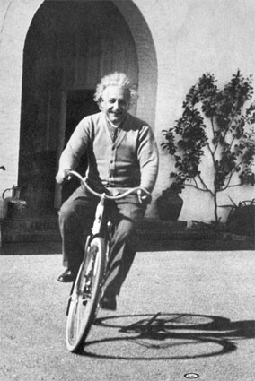

2/9/2010
> Jodi's "clot" was a false alarm.
But that does not explain her symptoms. She will have an MRI before they send her home.
That's
so good to hear!
I've really aware of how sensitive my own head is lately. I stayed up to 2am a few days in a row working on a project and I had a dense fuzzy feeling in the right lobe for the next week. Ambient music helped to smooth it out. I've been writing an interactive movie in which there's a possibility the narrator has a brain tumor. There are several working titles: Crackpots, I’ll Follow the Sun, Cassini Blossoms, and The Hollow Core.
Don’t forward this to anyone yet, we don’t want someone to copy the ideas before it’s published. It’s about families and teaching physics to children.
Here's the opening (very visually cinematic)...
INTRO
(Written Feb 7, 2010)
A group of families and two guides are ascending a path toward a jungle covered hill in Mexico. The group is hot as they wind their way from the sun into the forest. A pregnant woman is hiking with her husband and their 4 year old daughter. The heat of the climb has her exhausted. Her shirt says, JPL Cassini Deep Space.
The woman sighs and pauses, glad to be out of the sun. She looks at her husband with mild frustration. Their eyes turn up the path to their daughter, several paces in front of them as she turns slowly around, looking up at the trees with awe. The surrounding forest is covered in monarch butterflies. Their daughter smiles and the mood of the parents lightens as they watch her put her hands in the air and twirl around. A group of butterflies takes flight.
The camera view spins through the trees. We hear a soft, instrumental version of the Magical Mystery Tour starting up. It’s a gentle sweeping version, more like George Harrison would perform than the heavier beat of the original.
The view widens. We follow the group of butterflies up through the trees until the full valley and surrounding mountains are behind them. The shot follows the butterflies over a nearby village in the valley below.
Three native teenager girls are carrying round, earthen pots near their bellies, smiling and laughing. As the young women walk through the village, butterflies are landing on buildings, plants and a tour bus.
We see a close-up of a butterfly landing on a flower at the edge of the forest. A puff of yellow pollen is shaken from the pistol and fills the air around it. The camera’s focal point shifts to the child behind the flower. She’s watching the butterfly intently. The hand of the father rests on the pregnant woman’s hand as they watch their child from up the trail. The camera narrows in on the couple’s hands. She moves their entwined fingers over the curve of her pregnant belly.
The camera cuts to the hand of one of the three girls in the village, which wraps around the pot she carries like one would hold a pregnant belly. Each pot is painted with bands of light and dark that resemble the planet Saturn. Each is perfectly spherical with a hexagonal opening.
As the three women reach the center of their small village the sun is setting. Each tosses the pot they are carrying forward into a circular courtyard at the center of the village.
The three pots impact each other from the sides, starting a circular motion. The pieces shatter, mix and collide.
The camera moves upward, turning slowly above the courtyard as the pieces tumble across the ground in slow motion. From the central point of impact they form a ripple of motion, bouncing upward and then spreading outward in smaller, bouncing ripples. They move to the raised edge of the courtyard’s circle, rebound and form a slight ripple back inward from the edge.
“Roll up, roll up for the magical mystery tour, step right this way.” The camera widens outward from the circle in the village, clouds, sunset and mountains.
We hear the four year old girl laughing and see a shower of pollen as hundreds of butterflies alight on the flowers. The pregnant woman smiles. The camera follows the butterflies through the trees as the last rays of sun begin to filter through.
Dusk is falling and the group is descending from the mountains.
The camera again goes wide over the valley as night falls. The stars are magnificent. From above the earth we see the winding arm of a hurricane approaching the Mexico coast.
Scene two…
Rain is falling on a window in a house in the Mexican village as ambient swirling sounds blend into a phone ringing. A woman’s hand reaches for an iPad phone to click an “Answer” button.
A male voice whispers, “Jenni, wake up, Saturn is blossoming.” The image on the iPad shows the planet Saturn. Tiny hurricanes follow a hexagon-shaped path around the north pole.
Actually occurs...
http://ciclops.org/view/5950/Spring_Unveils_Saturns_Hexagon?js=1
TALES OF BOYS, DADS AND SPEED
In the next chapter, a collection of vintage race cars peel through the Mexican village as the sun rises on a rain soaked Day of the Dead celebration. This chapter is still taking shape.
In each of these initial chapter we are introduced to a different do-it-yourself scientists through the eyes of their children. The parent and child intros have different themes: basketball, a soap box derby, snowflakes, butterflies, biking and sailing. The introduction of each parent ends with a whack to the side of the head.
MOVIE ARCH AND ARC
(Written Feb 9, 2010)
Here’s the theorem that forms the basis for the movie’s arch:
1. Hurricanes are calm in the center - due to rotational gravity.
2. Black holes also have a calm eye - since 99% of the matter circulates - as reported last month.
3. Similarly, the core of the earth is probably less dense iron than the surround iron due to the outward pull of gravity. A less dense core with alternating layers of density would contain pressurized water, which accounts for the flooding on Mars and Noah’s flood.
4. The inter-locking shape of the continents suggests that the Earth may expand and contract, with internal density changing to adjust for wobble, external orbital influences from other planets and meteor impacts.
5. All of these systems (hurricanes, planets, solar systems, galaxies) are defined by their edge gravity, rather than their center. Heated air carries rain upward in the wall of the hurricane falling down as rain on the arms. Matter heats as it approaches the center of the galaxy, changes state as it is ejected into less dense space and returns to form new stars in the spiral arm.
6. The sun itself could be largely hollow, pulled outward by its own mass and the surrounding planets.
7. We uses similar accelerating spherical processes to create dreams. During dream sleep and daydreaming, energy circulates the outer edges of the brain’s folds, pulling “focus” away from the center. This motion defines moods and emotions in the subconscious outer parts of our brains, which then rain down later during consciousness.
This year, we’ll start to receive data from the Hadron Collider which may reveal that the universe itself is defined by an outer boundary, and that our 3D perception of reality is defined by the extension of 2D light into the area we inhabit. At least that’s what the guy in charge of the smaller collider in Illinois says.
For one of our dramatic endings, the parents will fly a spaceship into or around the sun. Their spaceship will use a “hot plasma” container for a fusion engine with retractable sales. For some the sun will represent lost love and for others their parents. Viewers may choose to combine all the endings as one. In which case, flying into the sun is the most direct route into deep space.
The insanity of flying into the sun builds upon a theme that the narrator may have a brain tumor. He brings together other crackpot theorists to explore each of the ideas above, and bounce them off their children. We are never quite sure if he and his crew are madman or truly brilliant.
I heard a techno song this morning (Feb 9, 2010) with the following line:
And if you only knew, just how much the sun needs your, to help light the sky, you would be surprised.
(Cerf, Mitiska & Jaren – Light The Skies)
This inspired me to figure out the ending. We don’t just rely on the sun, the sun relies on us!
It’s not simply rotating matter that defines spherical gravity around a hollow core, it’s the total combined consciousness within the parts of the system. We are all spiraling our experiences into high density quantum storage in our minds. The entire planet does this. Lighting strikes and changes energy states, like the synapses in our brains. Hurricanes are the stuff of dreams.
That’s the God concept I’ve been after. We’ll touch on it lightly and leave it open to interpretation. It makes the trajectory more the Jodi Foster foster film where she travels through mind space to interact with her father on faraway beach.
Here’s the notes for the biking character introduction.
This journal-style entry will be converted into a more cinematic flow.
FULL BRAIN CYCLING
(Written Feb 4, 2010)
The Red Sea parts and we hear voices,
The Red Sea whirls and we make realizations.
This morning’s kōan was the process of the kōan itself. I went to bed thinking about the analogy between the Red Sea parting and the separation of the left and right brain in thinking. My speculation is that religious law-and-order experiences occur when the left and right brain are the least connected directly, when they instead communicate to each other as two distinct entities. The experience of Moses receiving the commandments is one of both hemispheres being very active, but with minimal cycling between the two lobes – allowing the creative side to talk to the analytical side.
As I lay there this morning, I encouraged the energy in my head to rotate rapidly throughout my cranium. In a few seconds I have the realization that the act of rapid rotation during a relaxed sleep is what occurs when insights come early in the morning. My brain quickly shifts back into “left brain – right brain” mode to capture the insight. This is why we have only one major insight per morning, and then jump up to act on it. Continued cycling would not allow the creative thought to be captured and analyzed. Writing the thought brings added clarity since the analytical mind can fully digest the creative.
Full brain cycling is the exact opposite of focusing. It probably occurs during deep sleep. I’ve still not fully recovered from the dense focal spot that was in my head last week. The ambient music spread out the focal point with its long waves. But then my entire brain felt a little mushy. More angular music helped. The focal spot is still there though, within the right lobe near the center, two inches back from the eye. So last night I massaged it briefly by mentally cycling energy through it. Felt good, I’d been avoiding doing that thinking it could aggravate it.
Yesterday I was thinking, “gosh, was it several days of a dense focal point part of the inspiration for several mornings of writing?” Are the days after inebriation or sleep deprivation or cell phone usage the times when artists are the most productive?
Each chapter will visually represent a brain function and the related waves. The first chapter is a crack in the skull as the Mayan pottery scatters. Sudden awakening. In ancient cultures, holes were drilled in the head of living individuals to reduce pressure. When Abbey walked into a pole yesterday, I told myself it hurts now, but a thump to the head may help form the cracks that allow for the expansion in grey matter.
My high school humanity teacher said he woke up one morning and his entire brow had expanded forward. Now that’s a major tectonic shift. He looked more like an ape man from that day forward.
I read that the Jewish tribes taught their warriors to fight left-handed to catch their enemy off guard. The other counties of the middle east suppress left-handedness, since it is taboo to use the left hand for any activity except the wiping of the derrière.
My mother is shopping at the international market with her black babushka on to keep her head warm. The workers are staring at her. The clerk at the meat counter asks her if she is Muslim. I suspect they were watching her reach for items with her left hand.
This stance would have lead left handed people to be cast out, to contribute more genetic material to the wandering tribes of the Jewish. Could these right brained people been more likely to become scribes and artists? Surely.
I was thinking about religious thinking after yesterday’s scout meeting. I’m surrounded by a group of more God following and fearing individuals than my average preschool parents cluster. I think to myself, is the difference between the political spectrum that right-wing individuals use their lobes more independently? Red Sea parted. Do they actually live in a universe of more duality? This would explain why they have more affairs. They build up a strong moral code side, but the emotional, lustful size is less restrained by the logical side. Brains divided.
I love hearing them talk about the marshmallow guns and how they can’t fathom why someone would withdraw from scouts because of these. I think about taking the head of the Southern Christian Leadership Conference to a vegetarian restaurant two years ago and being surprised by his lack of compassion for the life style. I think about the secret affairs that are more predominant in church culture. At tonight’s den leader meeting, the scout master is absent again. He’s a traveling phone salesman and I wonder if his wife, who is present, thinks about why he could not make the meeting at the last minute?
It’s not that religious individuals use less of their brain, it’s that the two hemispheres function more independently. Is this duality genetic, or shaped within the womb? I’m less inclined to think brain function is cultural or social than I used to be. Watching children, we see that they are born with a personality that they carry through their lives. Religion is not a personality type, but conviction is. Nuns have a lot of conviction.
The Dali Lama is selected by observing children and their level of compassion. Will the search to find the next Dali Lama deploy the use of brain wave MRI scanners to narrow the field to children with patterns similar to the most recent Lama?
The title of this chapter is a funny one, because it brings to mind bicycling. The best way to reshape the patterns of the brain is through humor. Laughter is the process of creating disruptive waves which shake and redistribute accepted notions. Children laugh when they see anything unusual. They are re-compartmentalizing - shifting their world view ever so slightly with each rhythmic wave of laughter.
The issues presented here are weighty ones, since they look directly at the left-right nature of the middle east and the political separation that exists in all cultures. So we need a light hearted theme, Einstein on a bicycle. Full brain cycling…

A photograph of Albert Einstein riding his bicycle in Santa Barbara. - public
domain
I’m taking this picture with me when I go to get my next haircut!
My ultimate goal is to see Einstein take a fall, to unleash the limitations his thought imposes on our ability to travel faster than light. And to better observe the dense matter that surrounds us, the high and low pressure differences that occur throughout the universe that cause vortexes and waves to form, rise in the center and fall back upon themselves, like thought processes. And to teach my children this awareness as they toss a stick in the pond. I lay back on the grass staring at the sky, drifting away - until a kind woman, the duck-kimosabi, jolts me back. “Is it okay if I ask your children not to throw things at the ducks?” Wack, a hit to the side of the head.
Send me any corrections and inspirations you get from reading this initial flow. You’ll note that your inspirations already run through it. I’m remembering how Marcia sent me the Sergeant Pepper album years ago. Music, memories and emotions reverberate. One of the chapters is inspired by our work on a wooden scooter that I’m building with the kids and the work leading up to the pinewood derby car race last weekend. It taps directly into my dad’s stories and pictures of building the go-cart with Grandpa Bill. I’m looking forward to rereading some of the emails you’ve forwarded from Gary’s Faules’ race in Mexico.
Love you,
Loren
___________________________
Loren Kevin Heyns
DreamStudio Interactive
678.468.1000 / 404.215.9955
Feb 11, 2010 Follows after the email I sent Tuesday… LIGHTNING STRIKES 2/11/2010 Sent to Dad and Marcia - This morning's exerpt I’m not your ordinary crackpot. I’m a brilliantly cracked pot, whose shards and colors impact the world and power the sun. I went to bed last night with the question, who will be the next parent character we introduce as we follow the butterfly migration north from Mexico? The answer arrived within the first minute of waking. And here’s the bizarre thing, the brilliance of the answer was so powerful that I could literally feel the subconscious brain snappling and crackeling as it started to put together the implications and scenarios long before I even started to think about them. The answer was Tiger Woods, oh the glory of it. The powerful emotional response of a million loving and hating fans is enough to power the entire universe. Tiger is at his ranch in Texas. The beloved Tiger woods, held so high by father-in-law Jimmy, who fell so low in an instance. Jimmy can’t figure out why Golf (with a capital “G”) has not immediately banned Tiger. I tell him that Pete Rose cheated on the game of baseball. Tiger’s sins have not impacted the playing of the game, but for my father-in-law they have, profoundly. Still, I suspect and hope that Tiger will climb back, as he always has. Here’s what’s profound, the energy I felt in my brain was not cycling, it was synapses firing, everywhere. But I wasn’t consciously thinking thoughts. I was just relishing the happy emotion of such an earth shattering selection. If there was any hope to the theory that our brains transform energy on a quantum level, then I was converting a boat load. I was powering the sun. I suspect that my subconscious mind was drawing together many connections, ones that I would start to interact with shortly. These rolling short waves almost make the body want to shake or tremble. Mental laughter is occurring, tiny seismic jingling. Okay, here’s the great irony, the comedy and tragedy rolled into one. Tiger is our greatest cultural hero and our greatest/worse adulterer. He has taken on God status at the level of Zeus or Jupiter, the lecherous Gods with women in every port. Tiger is essential to the story line because he will chart the course for our trip around the sun, like an expert golf swing. Tiger’s keen eye can point a spacecraft at the right trajectory to skate the edge of the sun. Without burning up and without being flung off. Tiger will find the sweet spot, an orbit that will allow us to reach the speed of light within the photon sphere of the sun, and safely step over to the other side. The introduction of Tiger shifts the entire story line. Now we are no longer waiting for the parents to grow old before they travel off to the sun. With Tiger on board, I am now charting a course to skate the sun without delay. The character representing Tiger, hopefully tiger himself, will be one of the high paying guests at the family vacation retreat. He’ll likely attend with his wife. This will be super effective at building the conflict between all the parents, while the kids play. The plot progression will therefore need to lead to the near-term death of one of the parents. This will occur after the Mayan New Year celebration and before the parents take a flight on the new Virgin Galactic orbital rocket. Here’s the fun part, our brilliant minded scientists have somehow figured out a way to accelerate the Virgin Galactic orbiter beyond the pull of gravity. They set sail for the sun to rescue their lost friend. It’s exactly the wacky sort of pirate move I’ve been after! Virgin Gorda is in the chain of islands that form the setting for Treasure Island, so a modern day pirate theme winds its way through the group’s escapades. And here’s another exciting part. I know which parent will have died, it’s Brandon Barber, the student council president at my high school. Brandon’s got the right Houdini energy to escape death, or in the very least to inspire a group of rag-tag misfits to go to the edges of the universe to find him. He’ll have those big army boots on, so he can survive anything. Brandon marched in to save Weni once when a large bully was making advances on her and she called me from her house to ask if I could help get him to leave. Maybe Weni has died? Yes, that’s more emotional. Brandon is leading the charge to rescue her. But why not me? I feel the sinking. Why not me. I need to be there too. Wow, I could really feel that drop in emotions. When Weni called me many years ago, I sent in Brandon – a neighbor of hers about seven condos away. Would my parents (mom and stepdad) have let me borrow the car if I’d asked? This question will take more time to resolve. It strikes me now that this turning away was the instance that set up the self loathing I felt for putting schoolwork first. I wanted to be the rescuer, this was the knight in shining armor roll that I so wanted to build into the relationship. To ride up on a white horse, instead I allocated. This time I need to be by Brandon’s side during the rescue. What if when the group disappears from our reality, they still continue to communicate with friends using Facebook? That would be funny in the dreams of one of the characters who have remained behind. Like a phone call from the dead in times of yore. The lost Weni should communicate from Facebook into dreams. That could motivate the group to take on such an insane venture. Weni was there when the sounds of Saturn were first heard by human ears. Has this experience provided her with the ability to communicate from beyond? Or are the mushrooms of our mushroom scientist having an effect on the group? Or both? Richard Branson has been subtly pitching $200,000 rides on his new spacecraft to members of the gathering. The group members are now very interested. When I watched the Life Aquatic last week, I was disappointed. It was all about death at sea. Now I seem to have made it relate. The ocean is such a direct path into our subconscious. The rhythm of the waves is sadness and deep sleep. We can capture this much better than the Life Aquatic by placing the grief scene at the ocean late at night. The group sits on a beach on a starry night after the loss. They are stretched to the ends of their emotions. After a night of arguing, they have been hit with a loss. How do they cope? When I went to the Baja Peninsula during spring break in college my sophomore year, one of the girl’s parents was shot and killed at a gas station back in Los Angeles. Part of our group returned with her. I stayed and sung a lot on the beach, it was very sad. Part of the sadness was because I felt abandoned by my friends. Selfish. I felt left behind with a group I didn’t feel totally connected with. Another group camped near us. We belted out Violent Femme songs like there was no tomorrow. I’m departing from the script here, but it sets the groundwork for a later time when my friends Richard, Donna and I sat on the cliffs in Isla Vista overlooking the sea and singing Beetle songs. Loss and the sea go hand in hand. Our group sings, they unite. They find a common ground in the sadness. They return back to their regular lives, but each has a revelation in a waking dream which inspires them to set aside reason and pursue the crazy idea of a rescue. One communicates with Weni on Facebook in a dream. I’ve often heard conflicting stories that lightening originates from the sky or is ground up. This morning’s daily Code Project newsletter has a link to high speed photography that solves the riddle… http://www.wired.com/thisdayintech/2010/02/gallery-lightning/ The photographer writes… The video shows a downward-propagating negatively charged, stepped leader. The lightning branches out in many different directions, causing one leader to make a connection with the ground, creating a bright return stroke. The lightning was filmed at 7,200 images per second (139 microseconds per image). The downward leaders are traveling at a couple of hundred kilometers per second. The bright return stroke travels upward at around half the speed of light, and is too fast to capture in more than one image. Ah, now I know how Weni dies in the story. A lightening strike while on the top of the boulders at Virgin Gorda. My uncle George had a kinship with lightning. His hair would rise up. He was a legend in his own time. A book unto himself and sorely missed. Feb 12, 2010 Sent to Dad and Marcia My Family is Incredible Our friend Narin and I are putting together family yoga classes. The theme of the opening chapter (first class) is that mother nature is incredible. It circulates around butterflies, pregnancy and children. The theme of the second one will be exploring “incredible” roles for men in a world where women are increasingly the heroes. The message throughout the classes will be how mental perception resonates. This resonance is represented by colliding pottery tiles in motion forming the Flower of Life in the center of our village. Three primary colors will intertwine, yellow, amber and ocean blue, mixing to form other patterns in motion. http://www.guide-to-symbols.com/fol/ Men as Builders, Men as Travelers and Men as Providers are the roles to explore in the next chapter. To convey this, we’ll need a super-human feat from the husband. In the opening chapter, the main female character, Jenni, is pregnant. In chapter two her labor begins in the Mexican village on the morning a hurricane is arriving. After being awaken by a raving call from an old boyfriend babbling something about Saturn blossoming, the sound of wind and rain is shattered by the sound of a race car coming through the slick village streets. Outside we see that people are beginning to emerge under the awnings of the village to view the race. Many are dressed in customs, with skeletons painted on happy faces. It’s the Pan-American vintage road race, culminating during the Day of the Dead celebration each year. As the couple and their daughter pack and prepare to leave, each race car comes with increasing frequency, paralleling the increasing closeness of the contractions. The families board the tour bus and begin to make their way down to the mountain toward a larger city where a modern hospital resides. More Day of the Dead revelers are starting to take to the streets. As the rain worsens, and the bus winds down the mountain, part of the road has collapsed ahead. The men on the bus swings into action, building a makeshift bridge from corrugated roofing and timber. Two race cars spin by and go over the bridge. The bus is stuck in the mud. The husband flags down the next racers, two men in a white vintage sports car. There’s barely enough room from the woman to lay down it the back. The navigator gives the passenger seat to the husband. A grandmother character rests her hands on the shoulders of the couple’s young daughter, who stays at the bus. Together the three are off to get the woman to a hospital as the hurricane hits shore. The driver skillfully navigates around cows crossing the road, falling trees, and other crashed racing cars. But they can’t make it in time, the contractions are too close together. The husband pounds on a thick door to get into a house. A gruff man says in Spanish that there is no room. They run into a stable to get out of the rain. As the children (twins!) are delivered, the eye of the hurricane enfolds them in calmness. The sun shines through the circling clouds. The camera follows up the massive eye walls of the storm high into the atmosphere. Chapter 3 – 3 months later Cut to images of the massive eye wall at the north pole of Saturn. Jenni has returned to work and she and her office mates are looking over detail images of layered walls where jet streams take sharp turns in the shape of a hexagon. Dozens of hurricanes follow around each turn. The group at the Jet Propulsion Lab in Pasadena is looking at newly created video assembled from images taken by the Cassini space probe. http://ciclops.org/view/5950/Spring_Unveils_Saturns_Hexagon?js=1 Feb 13, 2010 Dad writes: Loren, Gary Faules says: "how did he know we raced during The Day Of The Dead and so on? Great stuff." Dad Gary wrote about the Day Of The Dead celebrants and had pictures on his website. I'm looking forward to tracking the photos down. I'll add some links to his site from the interactive slides laying out the story concepts. It's always been one of my dreams to get you and the kids down there at the same time as the race and the butterfly over-wintering. In grad school, Terri studied Spanish at one of the villages our friend Kim Bailey takes the butterfly tour groups through now. We had a solid five of sledding here tonight with 4 inches of snow. The steepest hill in Grant Park is on the side of the old civil war embattlement. We have the best sleds, so we always let passers-by take a few turns. It's fun to see how many old folk are willing to take the plunge down these steep hills. The snow is so rare here that many folks grab whatever they have, we saw card board boxes, trash can lids and cookie baking pans on the slopes. -Loren Your son mentioned "I'll add some links to his site from the interactive slides laying out the story concepts." I'm curious what that means... Is he writing a story on a blog or something? I'm interested in seeing it. -Gary Hi Gary, I'm writing a script and website for a "Mystery Tour" that will occur in the Virgin Islands during the Mayan New Year in Dec 2012. I'll send you a link in a few months to review. I may have some of the intro material posted online sooner. I'm pitching the concept to a friend of mine who is a movie producer and former sound guy for the Beach Boys. -Loren Hello Loren, LOL... Hey that's very cool! Please keep me posted I would love to see it progress. Gary, It’s become quite an “edge of your seat” adventure. The pregnant woman in the chapter you read is based on a friend of mine. She’s a former Mrs. California who manages the Cassini deep space project at JPL in Pasadena. There’s lots of interesting science content in the site designed for kids. The “Mystery Tour” event will be for families and the main lesson of the movie is about adults learning from their children. Should be a fun ride. Gary replied: Have you ever read The Pearl by Steinbeck? Loren replied: Great book! I was Steinbeck for Halloween one year in Santa Barbara. Dust bowl attire. Handed out grapes instead of candy. Austen and I are planning to read Treasure Island next month. He’s almost 8. Have you been to “The Bathes” at Virgin Gorda? That’s where the next portion of the story occurs. Nov 29, 2010 Loren sent to Larry Here’s a post of Gary’s from 2007. The Road Ranger he posted about was also on “Real People.” Wish the footage from those old shows was online. http://wiki.answers.com/Q/User:TheHighwayman From: Larry Heyns [mailto:hey-13@charter.net] Sent: Monday, November 29, 2010 10:08 PM To: Loren Subject: FW: Re: Long Walk -------- Begin forwarded message -------- Subject: Re: Long Walk Date: 11/29/10 7:35:00 PM From: Gfaules44@aol.com To: hey-13@charter.net What am amazing feat and one that humbles me. I am interested why someone from Paw Paw would chose such a trip but assume because he has read about all the beauty and admired "real" mountains instead of the "hills" found back east. I doubt the part about the bears but if he is considering witting a book it makes for good reading/book sales. When I made the Olympic team and because of the fact that I was once blind I was a guest on a popular 70's TV show called, "Real People". While I was there I met another guest by the name of "Wrong Way Woulton" (spell??) He was famous for riding his bike across the United States except he had done it backwards and he did it using his mirrors!!! LOL. He had all his gear on his bike for the journey. When I was talking to him I asked what else he had planned and he said as soon as the show was over he was beginning another ride except this time he would do it backwards around the border of the United States. Then one day I had about 6 of my employees with me in a station wagon and I had never told them about this guy and the show hadn't aired yet and as we were driving down a main drag THERE WAS WRONG WAY!!! with some news media vans following and filming him. LOL. After my guys got al;l excited seeing a guy ride his bike backwards I told my guys I knew that guy and they all laughed and said "Oh sure you do!" so I pulled up next to him and yelled his name. He stopped, looked in the car and said, "GARY!" We talked a few moments and I had a good laugh with my guys. In a message dated 11/29/2010 4:17:07 P.M. Pacific Standard Time, hey-13@charter.net writes: I like the part about the bears. http://www.mlive.com/news/kalamazoo/index.ssf/2010/11/a_2663-mile_hike_28-year-old_p.html